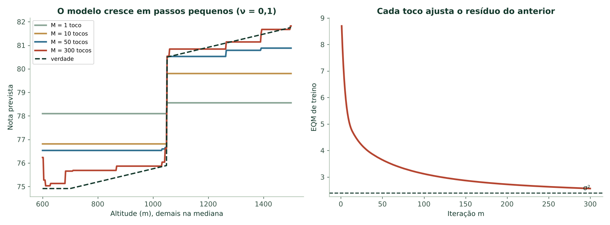
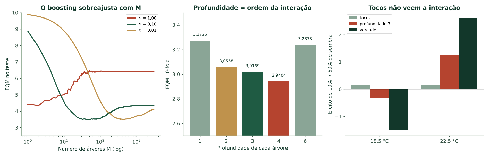

Gradient boosting de árvores
Soma árvores pequenas em sequência, cada uma ajustando o resíduo das anteriores — ataca o viés, e por isso exige parar na hora certa.
Comece por aqui
O bagging e a random forest ajustam muitas árvores independentes e tiram a média: atacam a variância. O boosting ajusta árvores em sequência, cada uma corrigindo o que as anteriores erraram, e soma todas: ataca o viés. Cada árvore é pequena e entra multiplicada por um fator de encolhimento \(\nu\); o modelo se aproxima dos dados devagar, e o número de passos é o que controla o sobreajuste.
Numa random forest, acrescentar árvores nunca piora. No boosting, piora: cada árvore nova ajusta um pouco mais do resíduo, que a partir de certo ponto é só ruído. O número de árvores \(M\) é um hiperparâmetro de verdade, escolhido por validação cruzada ou por parada antecipada.
O que é o gradient boosting
Começa-se com o modelo constante \(F_0(x)=\bar y\). A cada passo \(m\), calcula-se o resíduo \(r_i=y_i-F_{m-1}(x_i)\), ajusta-se uma árvore pequena \(h_m\) a esses resíduos e atualiza-se \(F_m=F_{m-1}+\nu\,h_m\). Para outras funções de perda (logística, de Poisson, absoluta), o resíduo é substituído pelo gradiente negativo da perda — daí o nome (Friedman, 2001).

| Parâmetro | No gbm | Efeito |
|---|---|---|
| Número de árvores M | n.trees | Mais M ajusta mais; demais sobreajusta. |
| Encolhimento ν | shrinkage | Menor ν exige mais M, e em geral generaliza melhor. |
| Profundidade | interaction.depth | Profundidade d permite interações de ordem até d. |
| Fração amostrada | bag.fraction | Abaixo de 1: boosting estocástico, menos variância. |
Pressupostos e como verificá-los
| Pressuposto ou cuidado | Por que importa | Como verificar |
|---|---|---|
| Observações independentes | A validação que escolhe M supõe isso. | Validação por grupo, se houver grupos. |
| M escolhido por validação | O erro sobe depois do ótimo. | gbm.perf(…, method = "cv"); parada antecipada. |
| ν pequeno | Com ν = 1 o mínimo é alto e estreito. | Use 0,01 a 0,1. |
| Profundidade compatível com as interações | Tocos só fazem modelos aditivos. | Compare profundidades por validação. |
| Perda adequada à resposta | Gaussiana, bernoulli, poisson… | distribution. |
Formulação e cálculo
Em que:
- \(F_0\)
- o ponto de partida: a média (regressão) ou o logito da prevalência (classificação)
- \(h_m\)
- a árvore do passo \(m\), de profundidade \(d\)
- \(\nu\)
- encolhimento (taxa de aprendizado), entre 0 e 1
- \(g_{im}\)
- o gradiente negativo da perda no ponto \(i\), avaliado em \(F_{m-1}\)
- \(\mathcal{T}_d\)
- o conjunto das árvores de profundidade \(d\)
Para a perda quadrática \(L=\tfrac12(y-F)^2\), o gradiente negativo é \(g_{im}=y_i-F_{m-1}(x_i)\): o próprio resíduo. Para a perda logística, \(g_{im}=y_i-\hat p_{m-1}(x_i)\), o resíduo na escala da probabilidade.
Exemplo numérico: os oito primeiros tocos
| m | Corte do toco | Passo (ν·h) esq. / dir. | EQM de treino |
|---|---|---|---|
| 0 | (média) | — | 9,6974 |
| 1 | Altitude ≤ 1.050,9 | −0,233 / 0,226 | 8,6972 |
| 2 | Altitude ≤ 1.050,9 | −0,210 / 0,203 | 7,8871 |
| 3 | Altitude ≤ 1.050,9 | −0,189 / 0,183 | 7,2309 |
| 4 | Altitude ≤ 1.050,9 | −0,170 / 0,164 | 6,6993 |
| 8 | Altitude ≤ 1.050,9 | −0,112 / 0,108 | 5,4087 |
Os oito primeiros tocos cortam todos em altitude ≤ 1.050,9. O degrau verdadeiro é de 4,6 pontos, e cada toco, multiplicado por \(\nu=0{,}1\), retira só 10% do que ainda falta explicar ali: o passo cai de 0,233 para 0,210, 0,189, … — uma progressão geométrica de razão 0,9. Só depois que o resíduo do degrau fica menor que o de outras variáveis o algoritmo passa a cortar em temperatura, pH, nitrogênio. É esse avanço lento que dá ao boosting sua resistência ao sobreajuste: nenhuma árvore isolada decide nada.
A profundidade é a ordem das interações
Um toco é função de uma variável só; somar tocos dá um modelo aditivo, \(F(x)=\sum_j f_j(x_j)\) — um GAM com funções em escada. Árvores de profundidade 2 representam interações entre pares de variáveis; profundidade \(d\), interações de ordem até \(d\).
Propriedades
- Reduz principalmente o viés; o encolhimento e a subamostragem controlam a variância.
- Sobreajusta com M grande, ao contrário da random forest.
- Com perda exponencial e classificadores fracos, recupera o AdaBoost (Friedman, Hastie e Tibshirani, 2000).
- A subamostragem por árvore (boosting estocástico) reduz a variância e o tempo.
- Aceita qualquer perda diferenciável: quantílica, Poisson, Cox, ranqueamento.
- Em geral é o método de menor erro em dados tabulares, quando bem ajustado.
Como interpretar os resultados
| Elemento | O que informa | Cuidado |
|---|---|---|
| Curva do erro validado em função de M | Onde parar. | O erro de treino não serve. |
summary(gb): influência relativa | Redução total da perda por variável. | Mesmo viés da importância por impureza. |
| Dependência parcial | Forma média do efeito. | Com tocos, é aditiva por construção. |
Estatística H de Friedman (interact.gbm) | Força de uma interação entre duas variáveis. | Varia entre 0 e 1; ruidosa com n pequeno. |
Como executar no R e em Python
Onde executar o código em Python
Não é preciso instalar nada: o Google Colab é um computador na nuvem, gratuito, que executa Python pelo navegador e já traz as bibliotecas usadas aqui (numpy, scipy e matplotlib).
O pacote gbm (Ridgeway) implementa o gradient boosting de Friedman: distribution define a perda ("gaussian", "bernoulli", "poisson", "laplace", "quantile", "coxph"), n.trees, shrinkage, interaction.depth e bag.fraction são os hiperparâmetros, e cv.folds faz a validação interna; gbm.perf() escolhe M. O xgboost (Chen e Guestrin, 2016) é a implementação moderna, mais rápida e com regularização L1/L2 nas folhas; lightgbm é outra opção. Em Python, sklearn.ensemble.GradientBoostingRegressor e HistGradientBoostingRegressor, além dos pacotes xgboost e lightgbm.
library(gbm)
set.seed(1)
gb <- gbm(nota ~ alt + temp + chuva + somb + nfol + ph, data = cafe,
distribution = "gaussian", n.trees = 3000, shrinkage = 0.05,
interaction.depth = 3, cv.folds = 10)
M <- gbm.perf(gb, method = "cv")
summary(gb, n.trees = M)
Exemplo de aplicação
Contexto dos dados
Os dados são fictícios e foram criados pelo autor: 600 lotes de café, cada um com a nota sensorial (escala SCA, de 70,0 a 86,1) e seis variáveis da lavoura — altitude (600 a 1.500 m), temperatura média (14 a 26 °C), chuva anual (mm), sombreamento (%), nitrogênio foliar (dag/kg) e pH do solo. Um lote é fino quando a nota é 80 ou mais (204 lotes, 34,0%). O processo gerador é conhecido e foi desenhado para ter as duas estruturas que os modelos aditivos não representam: um degrau de +4,6 pontos acima de 1.050 m de altitude e uma interação — o sombreamento melhora a nota quando a temperatura passa de 20,5 °C e a piora abaixo disso —, além de partes suaves em chuva, nitrogênio e pH e um erro de desvio-padrão 1,55. Altitude e temperatura têm correlação de −0,822, como na realidade. Como a verdade é conhecida, sabem-se os dois pisos: nenhum modelo de regressão pode ter erro quadrático esperado abaixo de \(\sigma^2=2{,}4025\), e nenhum classificador pode errar menos que o erro de Bayes, 0,1596. O mesmo conjunto atravessa as dez fichas dos grupos de árvores e de classificadores, o que permite comparar todos os métodos na mesma régua.
Código em R
# Gradient boosting de árvores: exemplo completo ----
# Pacotes: gbm (clássico) e xgboost (opcional, mais rápido)
# Dados fictícios: 600 lotes de café (arquivo cafe.csv, pasta scripts/ do site).
# Baixe o arquivo para a pasta de trabalho, ou leia direto do endereço:
url <- "https://cassiushenrique.github.io/ModelosEstatisticos/scripts/cafe.csv"
cafe <- if (file.exists("cafe.csv")) read.csv("cafe.csv") else read.csv(url)
str(cafe) # nota, fino (0/1), alt, temp, chuva, somb, nfol, ph
cafe$fino_f <- factor(cafe$fino, levels = c(0, 1), labels = c("nao", "fino"))
table(cafe$fino_f)
library(gbm)
f <- nota ~ alt + temp + chuva + somb + nfol + ph
# ---- 1. Boosting à mão, com tocos (árvores de um corte) e nu = 0,1
library(rpart)
F <- rep(mean(cafe$nota), nrow(cafe)); nu <- 0.1
for (m in 1:300) {
r <- cafe$nota - F # resíduo atual
h <- rpart(r ~ alt + temp + chuva + somb + nfol + ph, data = cbind(cafe, r = r),
control = rpart.control(maxdepth = 1, cp = 0, xval = 0))
F <- F + nu * predict(h, cafe)
}
mean((cafe$nota - F)^2) # EQM de treino
# ---- 2. gbm, com o número de árvores escolhido por validação cruzada
set.seed(1)
gb <- gbm(f, data = cafe, distribution = "gaussian",
n.trees = 3000, shrinkage = 0.05, interaction.depth = 3,
bag.fraction = 0.8, cv.folds = 10, n.minobsinnode = 10)
M <- gbm.perf(gb, method = "cv") # gráfico e melhor número de árvores
M
min(gb$cv.error) # EQM validado no melhor M
# ---- 3. A profundidade é a ordem das interações
cv_prof <- sapply(1:6, function(k) {
set.seed(1)
g <- gbm(f, data = cafe, distribution = "gaussian", n.trees = 2000,
shrinkage = 0.05, interaction.depth = k, cv.folds = 10)
min(g$cv.error) })
plot(1:6, cv_prof, type = "b", xlab = "interaction.depth", ylab = "EQM validado")
# ---- 4. Influência relativa e dependência parcial
summary(gb, n.trees = M) # importância
plot(gb, i.var = "alt", n.trees = M) # efeito da altitude
plot(gb, i.var = c("temp", "somb"), n.trees = M) # a interação, em duas variáveis
interact.gbm(gb, data = cafe, i.var = c("temp", "somb"), n.trees = M) # estatística H
# ---- 5. Classificação (perda logística = "bernoulli")
set.seed(1)
gbc <- gbm(fino ~ alt + temp + chuva + somb + nfol + ph, data = cafe,
distribution = "bernoulli", n.trees = 2000, shrinkage = 0.05,
interaction.depth = 3, cv.folds = 10)
Mc <- gbm.perf(gbc, method = "cv")
p <- predict(gbc, cafe, n.trees = Mc, type = "response")
# ---- 6. xgboost (opcional): a mesma ideia, com regularização e muito mais rápido
# install.packages("xgboost")
library(xgboost)
X <- as.matrix(cafe[, c("alt","temp","chuva","somb","nfol","ph")])
set.seed(1)
cvx <- xgb.cv(params = list(objective = "reg:squarederror", eta = 0.05, max_depth = 3,
subsample = 0.8), data = xgb.DMatrix(X, label = cafe$nota),
nrounds = 2000, nfold = 10, early_stopping_rounds = 50, verbose = 0)
cvx$best_iteration
A mesma análise em Python, com os resultados
Cole o código em um notebook do Google Colab ↗ e execute com Shift+Enter. Os valores abaixo são a saída desse código.
import numpy as np
# ------------------------------------------------------------------
# Bloco comum às fichas deste grupo: funções auxiliares e dados (cab16)
# ------------------------------------------------------------------
import numpy as np
from scipy.stats import norm
# ------------------------------------------------------------------
# Bloco comum às fichas deste grupo: funções auxiliares e dados (dados16)
# ------------------------------------------------------------------
import numpy as np
import pandas as pd
def le_csv(nome):
"""Lê o arquivo de dados da ficha: primeiro na pasta atual; se não
estiver lá (por exemplo, no Google Colab), direto do site."""
try:
return pd.read_csv(nome)
except FileNotFoundError:
return pd.read_csv('https://cassiushenrique.github.io/ModelosEstatisticos/scripts/' + nome)
# Dados fictícios: 600 lotes de café (arquivo cafe.csv, pasta scripts/ do site)
cafe = le_csv('cafe.csv')
ALT, TEMP, CHUVA = (cafe[k].to_numpy(float) for k in ('alt', 'temp', 'chuva'))
SOMB, NFOL, PH = (cafe[k].to_numpy(float) for k in ('somb', 'nfol', 'ph'))
NOTA = cafe['nota'].to_numpy(float); FINO = cafe['fino'].to_numpy(int)
NOMES=['alt','temp','chuva','somb','nfol','ph']
ROT={'alt':'Altitude','temp':'Temperatura','chuva':'Chuva','somb':'Sombreamento','nfol':'N foliar','ph':'pH'}
X=np.column_stack([ALT,TEMP,CHUVA,SOMB,NFOL,PH])
NC,PC=X.shape; SIGN=1.55
def f_nota(alt,temp,chuva,somb,nfol,ph):
deg=4.6*(np.asarray(alt)>=1050); rampa=0.0028*np.clip(np.asarray(alt)-700,0,None)
inter=np.where(np.asarray(temp)>20.5,0.052*np.asarray(somb),-0.030*np.asarray(somb))
agua=-2.6e-6*(np.asarray(chuva)-1450)**2
nitro=2.9*np.log(np.asarray(nfol)/1.6); acid=-1.9*(np.asarray(ph)-5.4)**2
return 74.0+deg+rampa+inter+agua+nitro+acid
def verdade(A): return f_nota(A[:,0],A[:,1],A[:,2],A[:,3],A[:,4],A[:,5])
# ------------------------------------------------------------------ fim do bloco comum
def c(v, d=4): return ('%.*f' % (d, v)).replace('.', ',')
def eqm(o, p): return float(np.mean((np.asarray(o) - np.asarray(p))**2))
def r2(o, p): return 1 - float(np.sum((np.asarray(o)-np.asarray(p))**2))/float(np.sum((np.asarray(o)-np.mean(o))**2))
def acur(o, p): return float(np.mean(np.asarray(o) == np.asarray(p)))
MU = verdade(X) # média verdadeira da nota
PVER = 1 - norm.cdf((80 - MU)/SIGN) # P(fino | x) verdadeira
ERRO_BAYES = float(np.mean(np.minimum(PVER, 1 - PVER)))
EQM_PISO = SIGN**2
def dobras(n, k, seed):
rg = np.random.default_rng(seed)
d = np.tile(np.arange(k), int(np.ceil(n/k)))[:n]; rg.shuffle(d); return d
def cv_reg(fabrica, A, y, k=10, seed=0, reps=1):
"""EQM por validação cruzada. fabrica() devolve um estimador sklearn novo."""
tot = []
for r in range(reps):
d = dobras(len(y), k, seed + 101*r); e = np.empty(len(y))
for j in range(k):
tr, te = d != j, d == j
m = fabrica().fit(A[tr], y[tr]); e[te] = y[te] - m.predict(A[te])
tot.append(float(np.mean(e**2)))
return float(np.mean(tot)), (float(np.std(tot, ddof=1)) if reps > 1 else 0.0)
def cv_clf(fabrica, A, y, k=10, seed=0, reps=1, prob=False):
"""Erro de classificação (e, se prob, log-loss e Brier) por validação cruzada."""
err = []; ll = []; br = []
for r in range(reps):
d = dobras(len(y), k, seed + 101*r); pred = np.empty(len(y)); pp = np.empty(len(y))
for j in range(k):
tr, te = d != j, d == j
m = fabrica().fit(A[tr], y[tr]); pred[te] = m.predict(A[te])
if prob: pp[te] = m.predict_proba(A[te])[:, 1]
err.append(float(np.mean(pred != y)))
if prob:
q = np.clip(pp, 1e-6, 1 - 1e-6)
ll.append(float(-np.mean(y*np.log(q) + (1 - y)*np.log(1 - q))))
br.append(float(np.mean((pp - y)**2)))
if prob: return float(np.mean(err)), float(np.mean(ll)), float(np.mean(br))
return float(np.mean(err)), (float(np.std(err, ddof=1)) if reps > 1 else 0.0)
def padroniza(A, ref=None):
ref = A if ref is None else ref
mu, sd = ref.mean(0), ref.std(0, ddof=1); return (A - mu)/sd, mu, sd
DADOS_TXT = ('600 lotes de café, nota sensorial (escala SCA, de 70 a 86) e seis variáveis de lavoura: '
'altitude, temperatura média, chuva anual, sombreamento, N foliar e pH. Lote "fino" = nota >= 80.')
# ------------------------------------------------------------------ fim do bloco comum
from sklearn.tree import DecisionTreeRegressor
from sklearn.ensemble import GradientBoostingRegressor, GradientBoostingClassifier, AdaBoostClassifier
from sklearn.tree import DecisionTreeClassifier
y=NOTA
print('LOTES DE CAFÉ:',DADOS_TXT)
print('Resposta: a nota. Piso irredutível sigma² = %s.'%c(EQM_PISO))
print('\n'+'='*70)
print('BOOSTING À MÃO: cada árvore pequena ajusta o RESÍDUO das anteriores')
print('F_0 = média; F_m = F_(m-1) + nu * árvore ajustada a (y - F_(m-1))')
print('Árvores de profundidade 1 (tocos) e nu = 0,1:')
nu=0.1; F=np.full(NC,y.mean())
print()
print('%4s %-26s %12s %12s'%('m','corte do toco','passo (nu*h)','EQM treino'))
print('%4d %-26s %12s %12s'%(0,'(média)','',c(eqm(y,F))))
for m in range(1,9):
r=y-F; h=DecisionTreeRegressor(max_depth=1).fit(X,r); t=h.tree_
F=F+nu*h.predict(X)
v=t.value.ravel()
print('%4d %-26s %12s %12s'%(m,'%s <= %s'%(ROT[NOMES[t.feature[0]]],c(t.threshold[0],1)),
'%s / %s'%(c(nu*v[1],3),c(nu*v[2],3)),c(eqm(y,F))))
print()
print('Os primeiros tocos insistem na altitude: o degrau é grande, e cada passo')
print('de tamanho 0,1 retira só 10% do que falta explicar ali.')
print('\n'+'='*70)
print('AO CONTRÁRIO DA RANDOM FOREST, O BOOSTING SOBREAJUSTA COM M')
print('Treino em 400 lotes, teste em 200; profundidade 3.')
rg=np.random.default_rng(5); idx=rg.permutation(NC); te,tr=idx[:200],idx[200:]
print()
print('%7s %14s %14s %14s'%('M','nu = 1,0','nu = 0,1','nu = 0,01'))
cur={}
for nu_ in [1.0,0.1,0.01]:
g=GradientBoostingRegressor(n_estimators=3000,learning_rate=nu_,max_depth=3,random_state=0).fit(X[tr],y[tr])
cur[nu_]=np.array([eqm(y[te],p) for p in g.staged_predict(X[te])])
for M in [1,10,30,100,300,1000,3000]:
print('%7d %14s %14s %14s'%(M,c(cur[1.0][M-1]),c(cur[0.1][M-1]),c(cur[0.01][M-1])))
print()
for nu_ in [1.0,0.1,0.01]:
k=int(np.argmin(cur[nu_])); print(' nu = %-5s melhor M = %5d, EQM teste = %s'%(c(nu_,2),k+1,c(cur[nu_][k])))
print('Com nu = 1 o mínimo é alto e estreito: duas árvores, e depois só piora.')
print('Passar a nu = 0,1 baixa o mínimo e o alarga. Passar a 0,01 já não baixa:')
print('só exige cerca de dez vezes mais árvores para chegar ao mesmo lugar.')
print('\n'+'='*70)
print('A PROFUNDIDADE É A ORDEM DAS INTERAÇÕES')
print('Tocos (profundidade 1) só somam funções de UMA variável: o modelo é')
print('aditivo e não representa a interação sombreamento x temperatura.')
print('M escolhido por validação interna (10% dos dados, parada antecipada).')
print()
print('%13s %14s %14s'%('profundidade','EQM 10-fold','M médio'))
for dp in [1,2,3,4,6]:
Ms=[]
def fab(dp=dp):
return GradientBoostingRegressor(n_estimators=3000,learning_rate=0.05,max_depth=dp,subsample=1.0,
validation_fraction=0.1,n_iter_no_change=50,random_state=0)
d=dobras(NC,10,0); e=np.empty(NC)
for j in range(10):
trj,tej=d!=j,d==j; m=fab().fit(X[trj],y[trj]); e[tej]=y[tej]-m.predict(X[tej]); Ms.append(m.n_estimators_)
print('%13d %14s %14d'%(dp,c(float(np.mean(e**2))),int(np.mean(Ms))))
print('\n'+'='*70)
print('A INTERAÇÃO, vista diretamente')
print('Efeito de passar o sombreamento de 10% a 60%, em dois climas:')
g1=GradientBoostingRegressor(n_estimators=600,learning_rate=0.05,max_depth=1,random_state=0).fit(X,y)
g3=GradientBoostingRegressor(n_estimators=400,learning_rate=0.05,max_depth=3,random_state=0).fit(X,y)
print()
print('%-22s %14s %14s %14s'%('','tocos','profund. 3','verdade'))
for T in [18.5,22.5]:
Z=X.copy(); Z[:,1]=T; A=Z.copy(); A[:,3]=10; Bm=Z.copy(); Bm[:,3]=60
r=[float((m.predict(Bm)-m.predict(A)).mean()) for m in (g1,g3)]+[float((verdade(Bm)-verdade(A)).mean())]
print('%-22s %14s %14s %14s'%('temperatura %s C'%c(T,1),*[c(v,3) for v in r]))
print()
print('Os tocos dão o MESMO efeito do sombreamento nos dois climas, porque')
print('não podem fazer outra coisa. A verdade muda de sinal.')
print('\n'+'='*70)
print('BOOSTING ESTOCÁSTICO: cada árvore numa subamostra sem reposição')
print()
print('%11s %14s'%('subamostra','EQM 10-fold'))
for sub in [1.0,0.8,0.5,0.3]:
v,_=cv_reg(lambda sub=sub: GradientBoostingRegressor(n_estimators=300,learning_rate=0.05,max_depth=3,subsample=sub,random_state=0),X,y,10,0,3)
print('%11s %14s'%(c(sub,1),c(v)))
print('\n'+'='*70)
print('CLASSIFICAÇÃO: o AdaBoost e o boosting com perda logística')
yc=FINO
print()
print('%-40s %10s %10s %10s'%('modelo','erro','log-loss','Brier'))
for nm,f in [('um toco',lambda: DecisionTreeClassifier(max_depth=1)),
('AdaBoost, 200 tocos',lambda: AdaBoostClassifier(DecisionTreeClassifier(max_depth=1),n_estimators=200,random_state=0)),
('gradient boosting, logística, prof. 1',lambda: GradientBoostingClassifier(n_estimators=300,learning_rate=0.05,max_depth=1,random_state=0)),
('gradient boosting, logística, prof. 3',lambda: GradientBoostingClassifier(n_estimators=150,learning_rate=0.05,max_depth=3,random_state=0))]:
er,ll,br=cv_clf(f,X,yc,10,0,3,prob=True)
print('%-40s %10s %10s %10s'%(nm,c(er),c(ll),c(br)))
print('%-40s %10s'%('erro de Bayes',c(ERRO_BAYES)))
Resultados da execução
LOTES DE CAFÉ: 600 lotes de café, nota sensorial (escala SCA, de 70 a 86) e seis variáveis de lavoura: altitude, temperatura média, chuva anual, sombreamento, N foliar e pH. Lote "fino" = nota >= 80.
Resposta: a nota. Piso irredutível sigma² = 2,4025.
======================================================================
BOOSTING À MÃO: cada árvore pequena ajusta o RESÍDUO das anteriores
F_0 = média; F_m = F_(m-1) + nu * árvore ajustada a (y - F_(m-1))
Árvores de profundidade 1 (tocos) e nu = 0,1:
m corte do toco passo (nu*h) EQM treino
0 (média) 9,6974
1 Altitude <= 1050,9 -0,233 / 0,226 8,6972
2 Altitude <= 1050,9 -0,210 / 0,203 7,8871
3 Altitude <= 1050,9 -0,189 / 0,183 7,2309
4 Altitude <= 1050,9 -0,170 / 0,164 6,6993
5 Altitude <= 1050,9 -0,153 / 0,148 6,2688
6 Altitude <= 1050,9 -0,138 / 0,133 5,9200
7 Altitude <= 1050,9 -0,124 / 0,120 5,6375
8 Altitude <= 1050,9 -0,112 / 0,108 5,4087
Os primeiros tocos insistem na altitude: o degrau é grande, e cada passo
de tamanho 0,1 retira só 10% do que falta explicar ali.
======================================================================
AO CONTRÁRIO DA RANDOM FOREST, O BOOSTING SOBREAJUSTA COM M
Treino em 400 lotes, teste em 200; profundidade 3.
M nu = 1,0 nu = 0,1 nu = 0,01
1 4,4264 8,8721 9,8856
10 5,0084 4,5592 8,8828
30 6,1459 3,5385 7,2503
100 6,4281 3,5720 4,6029
300 6,4010 4,1673 3,5537
1000 6,4009 4,3483 3,7002
3000 6,4009 4,3623 4,1168
nu = 1,00 melhor M = 2, EQM teste = 4,3452
nu = 0,10 melhor M = 51, EQM teste = 3,4793
nu = 0,01 melhor M = 448, EQM teste = 3,5011
Com nu = 1 o mínimo é alto e estreito: duas árvores, e depois só piora.
Passar a nu = 0,1 baixa o mínimo e o alarga. Passar a 0,01 já não baixa:
só exige cerca de dez vezes mais árvores para chegar ao mesmo lugar.
======================================================================
A PROFUNDIDADE É A ORDEM DAS INTERAÇÕES
Tocos (profundidade 1) só somam funções de UMA variável: o modelo é
aditivo e não representa a interação sombreamento x temperatura.
M escolhido por validação interna (10% dos dados, parada antecipada).
profundidade EQM 10-fold M médio
1 3,2726 561
2 3,0558 258
3 3,0169 180
4 2,9404 105
6 3,2373 108
======================================================================
A INTERAÇÃO, vista diretamente
Efeito de passar o sombreamento de 10% a 60%, em dois climas:
tocos profund. 3 verdade
temperatura 18,5 C 0,152 -0,308 -1,500
temperatura 22,5 C 0,152 1,239 2,600
Os tocos dão o MESMO efeito do sombreamento nos dois climas, porque
não podem fazer outra coisa. A verdade muda de sinal.
======================================================================
BOOSTING ESTOCÁSTICO: cada árvore numa subamostra sem reposição
subamostra EQM 10-fold
1,0 3,1021
0,8 3,0450
0,5 3,0471
0,3 3,0888
======================================================================
CLASSIFICAÇÃO: o AdaBoost e o boosting com perda logística
modelo erro log-loss Brier
um toco 0,2067 0,4203 0,1379
AdaBoost, 200 tocos 0,1872 0,5927 0,2007
gradient boosting, logística, prof. 1 0,1839 0,3979 0,1267
gradient boosting, logística, prof. 3 0,1817 0,3997 0,1295
erro de Bayes 0,1596
| M | ν = 1,0 | ν = 0,1 | ν = 0,01 |
|---|---|---|---|
| 1 | 4,4264 | 8,8721 | 9,8856 |
| 10 | 5,0084 | 4,5592 | 8,8828 |
| 30 | 6,1459 | 3,5385 | 7,2503 |
| 100 | 6,4281 | 3,5720 | 4,6029 |
| 300 | 6,4010 | 4,1673 | 3,5537 |
| 1.000 | 6,4009 | 4,3483 | 3,7002 |
| 3.000 | 6,4009 | 4,3623 | 4,1168 |
| ν | Melhor M | EQM no teste |
|---|---|---|
| 1,0 | 2 | 4,3452 |
| 0,1 | 51 | 3,4793 |
| 0,01 | 448 | 3,5011 |
| Profundidade | EQM 10-fold | M médio |
|---|---|---|
| 1 (tocos) | 3,2726 | 561 |
| 2 | 3,0558 | 258 |
| 3 | 3,0169 | 180 |
| 4 | 2,9404 | 105 |
| 6 | 3,2373 | 108 |
| Clima | Tocos | Profundidade 3 | Verdade |
|---|---|---|---|
| 18,5 °C | 0,152 | −0,308 | −1,500 |
| 22,5 °C | 0,152 | 1,239 | 2,600 |
| Fração amostrada por árvore | EQM 10-fold |
|---|---|
| 1,0 | 3,1021 |
| 0,8 | 3,0450 |
| 0,5 | 3,0471 |
| 0,3 | 3,0888 |
| Modelo | Erro | Log-loss | Brier |
|---|---|---|---|
| Um toco | 0,2067 | 0,4203 | 0,1379 |
| AdaBoost, 200 tocos | 0,1872 | 0,5927 | 0,2007 |
| Boosting logístico, profundidade 1 | 0,1839 | 0,3979 | 0,1267 |
| Boosting logístico, profundidade 3 | 0,1817 | 0,3997 | 0,1295 |
| Erro de Bayes | 0,1596 | — | — |
Leitura: o boosting com profundidade 4 e parada antecipada tem o menor erro de todo o grupo de árvores, 2,9404, contra 3,0805 da melhor random forest e 2,5695 do piso. É o resultado típico: bem ajustado, o boosting fica à frente; mal ajustado, fica atrás.
O encolhimento importa, e só até certo ponto. Com \(\nu=1\), o melhor modelo tem duas árvores e erro 4,3452; depois, o erro sobe e para em 6,40 — o modelo decorou o treino. Com \(\nu=0{,}1\), o mínimo cai a 3,4793 e é largo: de 30 a 100 árvores, o erro fica entre 3,54 e 3,57. Com \(\nu=0{,}01\), o mínimo é praticamente o mesmo (3,5011) e exige 448 árvores. Encolher mais não melhorou; só ficou mais caro.
A profundidade é a ordem das interações, e a tabela do sombreamento mostra isso sem nenhuma ambiguidade. Os tocos estimam o mesmo efeito, 0,152, nos dois climas — não podem fazer outra coisa, pois o modelo é aditivo. A verdade é −1,500 no frio e +2,600 no calor. As árvores de profundidade 3 recuperam o sinal (−0,308 e +1,239), ainda atenuado. O erro validado confirma: de tocos para profundidade 4, cai de 3,2726 para 2,9404. Profundidade 6 já piora: árvores grandes demais tornam cada passo grosseiro.
O AdaBoost tem erro de classificação competitivo (0,1872) e probabilidades ruins (log-loss 0,5927, o pior da tabela): a perda exponencial empurra as pontuações para os extremos, e a conversão em probabilidade não é calibrada. O boosting com perda logística tem erro parecido e log-loss de 0,3979, o melhor de todos os métodos de árvores nesta ficha e nas anteriores.
Erros comuns
| Erro | Como evitar |
|---|---|
| Escolher M pelo erro de treino | Ele só cai; use validação ou parada antecipada. |
| Usar ν = 1 | Mínimo alto e estreito; use 0,01 a 0,1. |
| Usar tocos quando há interações | Teste profundidades 2 a 6. |
| Ajustar muitos hiperparâmetros com uma única validação | Use validação aninhada para estimar o erro final. |
| Ler probabilidades do AdaBoost como calibradas | Use perda logística ou calibre. |
| Tratar a influência relativa como efeito | Mesmos cuidados da importância das florestas. |
Alternativas e quando cada uma é preferível
| Procedimento | Quando preferir |
|---|---|
| Random forest | Quando se quer um bom resultado com pouco ajuste. |
| BART | Soma de árvores com prior que regulariza; dá incerteza. |
| xgboost, lightgbm, catboost | Dados grandes; regularização adicional; variáveis categóricas (catboost). |
Boosting de componentes (mboost) | Quando se quer um modelo aditivo interpretável construído por boosting. |
| GAM | Relações suaves e aditivas. |
- Fixe ν = 0,05 e profundidade 3.
- Escolha M por validação cruzada ou parada antecipada.
- Compare profundidades de 1 a 6.
- Experimente subamostragem de 0,5 a 0,8.
- Estime o erro final com validação aninhada.
- Examine influência relativa e dependências parciais.
Referências desta ficha
- FRIEDMAN, Jerome H. Greedy function approximation: a gradient boosting machine. The Annals of Statistics, v. 29, n. 5, p. 1189-1232, 2001.
- FRIEDMAN, Jerome H. Stochastic gradient boosting. Computational Statistics & Data Analysis, v. 38, n. 4, p. 367-378, 2002.
- FREUND, Yoav; SCHAPIRE, Robert E. A decision-theoretic generalization of on-line learning and an application to boosting. Journal of Computer and System Sciences, v. 55, n. 1, p. 119-139, 1997.
- FRIEDMAN, Jerome; HASTIE, Trevor; TIBSHIRANI, Robert. Additive logistic regression: a statistical view of boosting. The Annals of Statistics, v. 28, n. 2, p. 337-407, 2000.
- SCHAPIRE, Robert E. The strength of weak learnability. Machine Learning, v. 5, n. 2, p. 197-227, 1990.
- FRIEDMAN, Jerome H.; POPESCU, Bogdan E. Predictive learning via rule ensembles. The Annals of Applied Statistics, v. 2, n. 3, p. 916-954, 2008.
- BÜHLMANN, Peter; HOTHORN, Torsten. Boosting algorithms: regularization, prediction and model fitting. Statistical Science, v. 22, n. 4, p. 477-505, 2007.
- NATEKIN, Alexey; KNOLL, Alois. Gradient boosting machines, a tutorial. Frontiers in Neurorobotics, v. 7, art. 21, 2013.
- HASTIE, Trevor; TIBSHIRANI, Robert; FRIEDMAN, Jerome. The elements of statistical learning. 2. ed. New York: Springer, 2009.
- JAMES, Gareth; WITTEN, Daniela; HASTIE, Trevor; TIBSHIRANI, Robert. An introduction to statistical learning: with applications in R. 2. ed. New York: Springer, 2021.
- RIDGEWAY, Greg et al. gbm: generalized boosted regression models. R package. Disponível em: https://CRAN.R-project.org/package=gbm.
- CHEN, Tianqi; GUESTRIN, Carlos. XGBoost: a scalable tree boosting system. In: ACM SIGKDD INTERNATIONAL CONFERENCE ON KNOWLEDGE DISCOVERY AND DATA MINING, 22., 2016, San Francisco. Proceedings [...]. New York: ACM, 2016. p. 785-794.
- R CORE TEAM. R: a language and environment for statistical computing. Vienna: R Foundation for Statistical Computing, 2026. Disponível em: https://www.r-project.org/.
- POSIT TEAM. RStudio: integrated development environment for R. Boston: Posit Software, PBC. Disponível em: https://posit.co/download/rstudio-desktop/.
- PEDREGOSA, Fabian et al. Scikit-learn: machine learning in Python. Journal of Machine Learning Research, v. 12, p. 2825-2830, 2011. (Função
sklearn.datasets.load_iris.) - VIRTANEN, Pauli et al. SciPy 1.0: fundamental algorithms for scientific computing in Python. Nature Methods, v. 17, p. 261-272, 2020. DOI: 10.1038/s41592-019-0686-2. (Funções do módulo
scipy.stats.) - HARRIS, Charles R. et al. Array programming with NumPy. Nature, v. 585, p. 357-362, 2020. DOI: 10.1038/s41586-020-2649-2.
- HUNTER, John D. Matplotlib: a 2D graphics environment. Computing in Science & Engineering, v. 9, n. 3, p. 90-95, 2007.
- GOOGLE. Google Colaboratory. Disponível em: https://colab.research.google.com/.
- As figuras desta ficha foram elaboradas pelo autor.

Prof. Dr. Cássius Henrique Xavier Oliveira
Professor · ICTIN/UFLA · Estatística, Confiabilidade e Ciência de Dados.
Conheça minha trajetória e projetos →